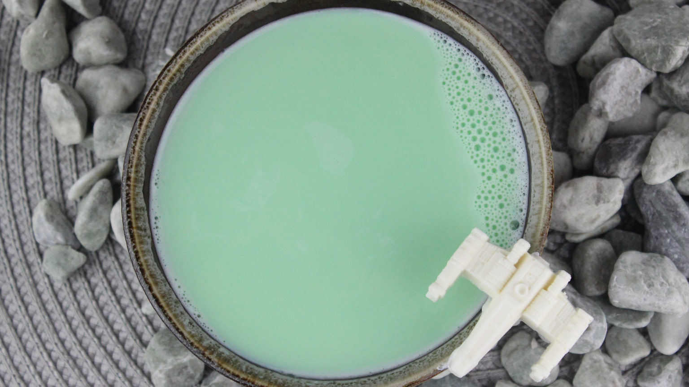

Green Milk

Description
In the 2017 film Star Wars: The Last Jedi, Luke Skywalker drank this
beverage during his self-imposed exile on the planet Ahch-To.
Ingredients
- 1 cup whole milk
- 1 tablespoon sugar
- 1/2 teaspoon vanilla
- 1/2 teaspoon almond extract
- green food gel dye
Steps
-
In a small saucepan over medium heat, bring the milk and sugar to a
simmer. Stir to combine.
-
When the sugar is dissolved, stir in the vanilla, almond extract, and drop
of green food gel dye.
- Stir together, then pour into a bowl.